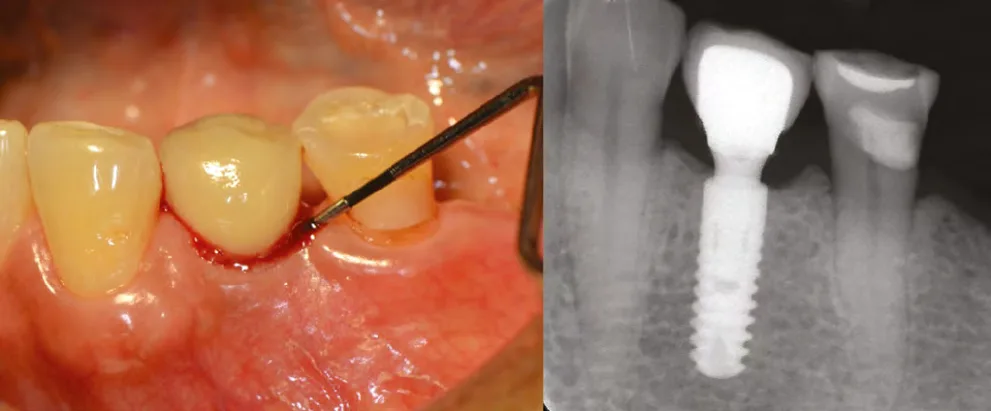
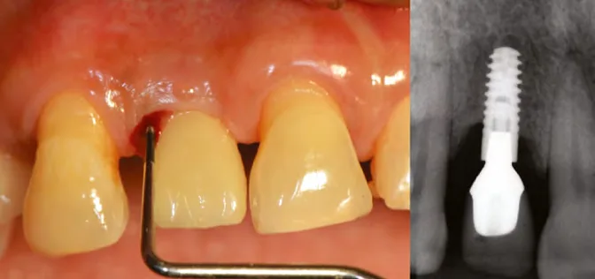

نسخه استخراجشده؛ ترجمه یا تأیید علمی انجام نشده است. وضعیت: captured
در کارگاه جهانی طبقهبندی بیماریهای پریودنتال و پریایمپلنت در سال ۲۰۱۷، طبقهبندی تازهای از بیماریهای پریایمپلنت ارائه شد و تعریف موارد (case definitions) برای سه وضعیت مشخص گردید.
وضعیت اول — مخاط سالم پریایمپلنت. یک نکتهی مهم و پرکاربرد:
«در حالی که خونریزی هنگام پروب نباید در معاینهی بالینی رخ دهد، هیچ محدودهی تعریفشدهای از عمق پروبینگ که با مخاط سالم پریایمپلنت سازگار باشد وجود ندارد.»
این جمله را دو بار بخوان. عمق پروب بهتنهایی سلامت را رد یا تأیید نمیکند — برخلاف آنچه بسیاری تصور میکنند. یک ایمپلنت با عمق ۵ میلیمتر میتواند کاملاً سالم باشد، و یکی با عمق ۳ میلیمتر بیمار.
پس معیار سلامت چیست؟ نبود نشانههای قابلمشاهدهی التهاب (قرمزی و تورم) و بهویژه نبود خونریزی هنگام پروب.
وضعیت دوم — موکوزیت پریایمپلنت. تعریف دقیقش:
«موکوزیت پریایمپلنت یک ضایعهی التهابی بافتهای نرم اطراف یک ایمپلنت داخلاستخوانی، در غیاب از دست رفتن استخوان حمایتکننده است.»
به عبارت «در غیاب از دست رفتن استخوان» دقت کن — همین است که مرز را میسازد.
وضعیت سوم — پریایمپلنتیت. «پریایمپلنتیت یک وضعیت پاتولوژیک وابسته به پلاک است که در بافتهای اطراف ایمپلنتهای دندانی رخ میدهد.»
و مرز دقیق: «موکوزیت پریایمپلنت و پریایمپلنتیت با ارزیابی از دست رفتن استخوان پریایمپلنت در رادیوگرافی از هم متمایز میشوند.»
پس دو مرز داریم:
• سلامت ← موکوزیت: افزوده شدن خونریزی هنگام پروب.
• موکوزیت ← پریایمپلنتیت: افزوده شدن از دست رفتن استخوان در رادیوگرافی.
و روشن بگوییم: «بنابراین تشخیص پریایمپلنتیت نیازمند تشخیص هر دوی خونریزی هنگام پروب و از دست رفتن استخوان ارزیابیشده در رادیوگرافی است.»
هر دو. نه یکی. استخوان از دست رفته بدون التهاب فعال، تشخیص پریایمپلنتیت نمیسازد.

مسئلهی عملی این است: برای گفتن «استخوان از دست رفته» به مقایسه با وضعیت پایه نیاز داری. اما بیماری که ایمپلنتش را جای دیگری گرفته و رادیوگرافی اولیه ندارد، چه؟
دقیقاً برای همین حالت یک تعریف عددی وجود دارد:
«در غیاب چنین دادههایی، تشخیص پریایمپلنتیت بر پایهی ترکیب خونریزی هنگام پروب، عمق پروبینگ ۶ میلیمتر یا بیشتر، و سطوح استخوانی واقع در ۳ میلیمتر اپیکالتر از کرونالیترین بخش قسمت داخلاستخوانی ایمپلنت است.»
سه عنصر را با هم نگه دار: BoP، PPD ≥ ۶ میلیمتر، استخوان ≥ ۳ میلیمتر اپیکالتر از کرونالیترین بخش داخلاستخوانی.
و توجه کن که نقطهی مرجع اندازهگیری استخوان، خودِ ایمپلنت است نه یک نقطهی آناتومیک — چون تنها چیزی است که در هر رادیوگرافی، بدون دادهی پایه، قابل تشخیص است.
حالا مهمترین تصحیح باور این درس:
«لقی ایمپلنت بنابراین یک علامت ضروری برای پریایمپلنتیت نیست، ولی میتواند در مرحلهی نهایی پیشرفت بیماری رخ دهد و نشاندهندهی از دست رفتن کامل اینتگریشن است.»
این را با آنچه دربارهی ایمپلنتهای شکستخورده میدانی کنار هم بگذار: ایمپلنتی که تکان میخورد، دیگر «بیمار» نیست — از دست رفته است. اگر منتظر لقی بمانی تا تشخیص بدهی، تمام پنجرهی درمان را از دست دادهای.
و همین نکته با یک توصیهی عملی کامل میشود: «از آنجا که شروع پریایمپلنتیت ممکن است زود در دورهی پیگیری رخ دهد، معاینات بالینی شامل ارزیابی عمق پروبینگ و خونریزی هنگام پروب باید بهطور منظم انجام شود تا نیاز احتمالی به معاینات رادیوگرافیک بیشتر برای ارزیابی سطوح استخوان مشخص گردد.»
ترتیب منطقی را ببین: معاینهی بالینی منظم تصمیم میگیرد که چه زمانی رادیوگرافی لازم است. رادیوگرافی روتین بیهدف نیست؛ یافتهی بالینی، آن را فرا میخواند.
و یک هشدار دربارهی معاینه: «باید توجه داشت که نشانههای قابلمشاهدهی التهاب ممکن است متغیر باشند و با فلز ایمپلنت یا روکش پوشانده شوند.»
یعنی پروتز میتواند بیماری را پنهان کند — و این دلیل دیگری است که چرا تکیه بر ظاهر کافی نیست و پروب لازم است.
